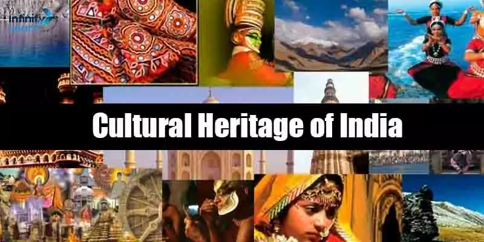

India is a vast and diverse country, home to 28 states and 8 Union Territories, each with its unique culture, traditions, and geography. From the snow-capped peaks of Jammu & Kashmir to the serene beaches of Goa, India's states represent a blend of heritage, language, and economy.
- Uttar Pradesh – India's most populous state, famous for the Taj Mahal.
- Punjab & Haryana – The agricultural heartland, known for wheat and dairy farming.
- Himachal Pradesh & Uttarakhand – Popular hill stations with breathtaking landscapes.
- West Bengal – Rich in literature and arts, home to Kolkata and the Sundarbans.
- Assam & Arunachal Pradesh – Renowned for tea gardens and biodiversity
- Bihar & Jharkhand – Land of ancient Nalanda University and mineral resources
- Rajasthan – Known for its deserts, palaces, and vibrant folk traditions.
- Maharashtra – The financial hub, home to Mumbai and Bollywood
- Madhya Pradesh & Chhattisgarh – Rich in wildlife and tribal culture
- Tamil Nadu & Kerala – Famous for classical arts, spices, and Ayurveda.
- Karnataka & Andhra Pradesh – Technology hubs with historical forts.
